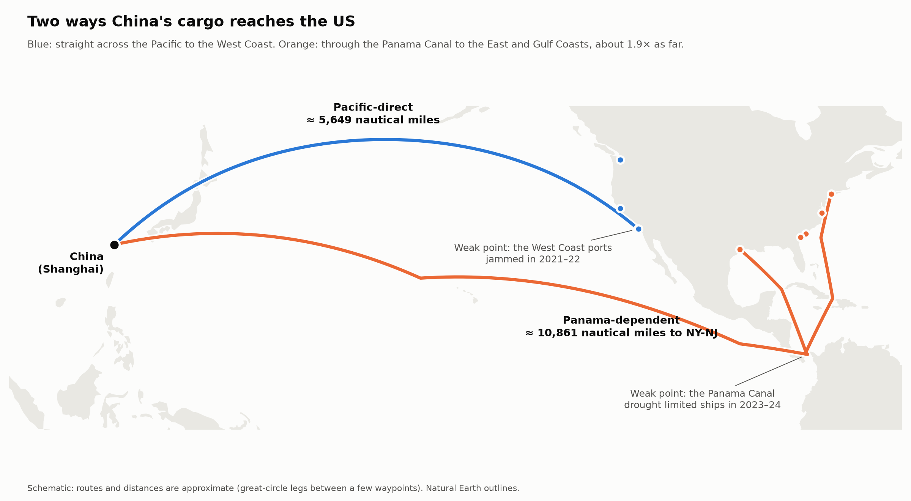
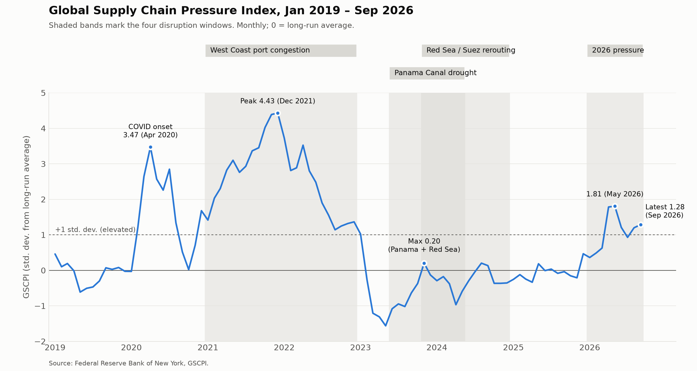
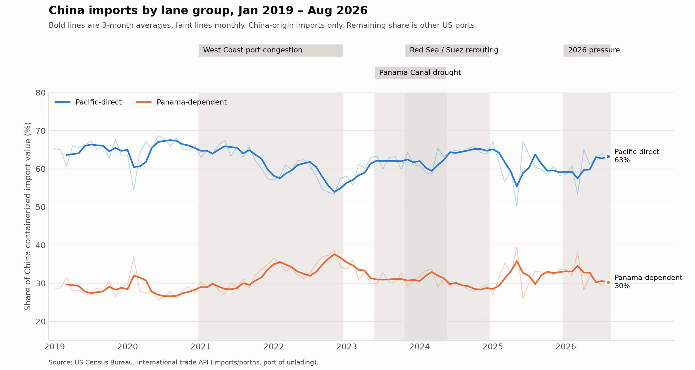
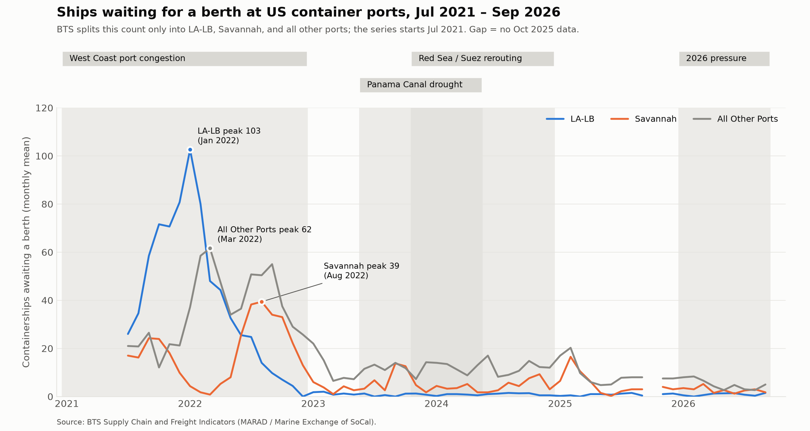
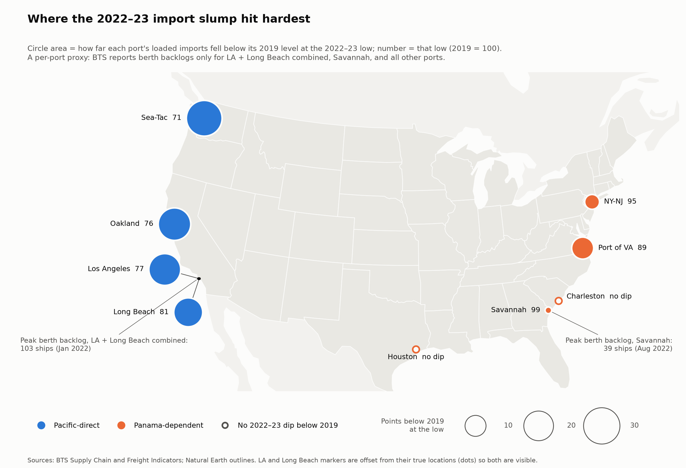
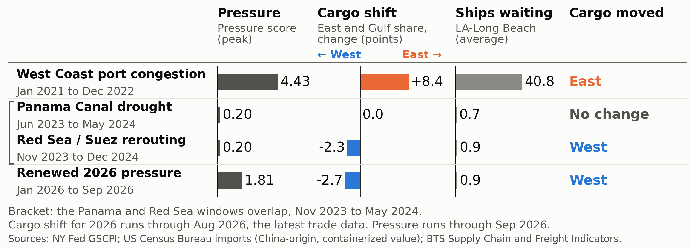
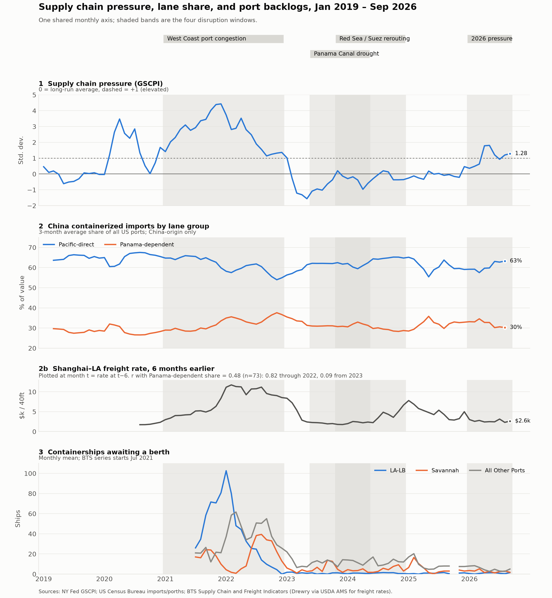
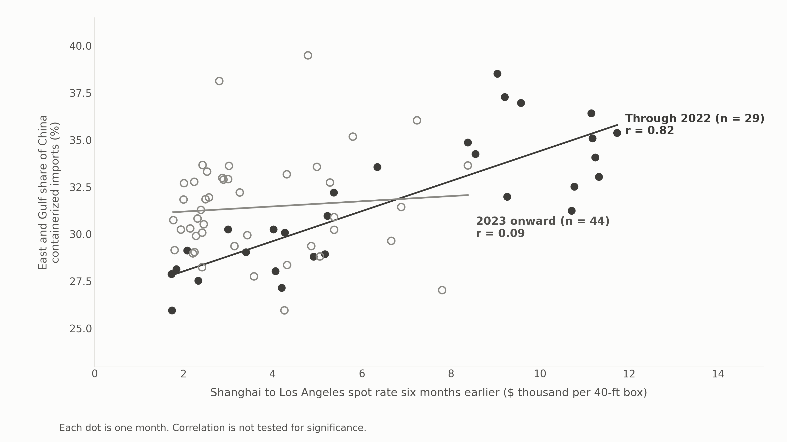
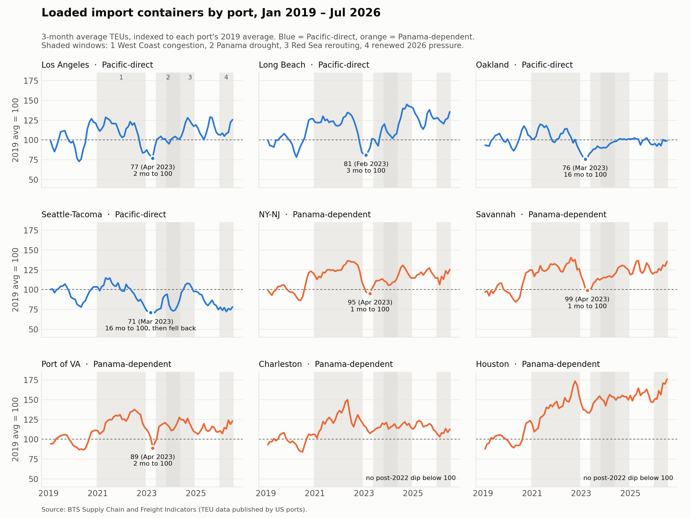

CIS-9655 Data Visualization · Prof. Lisa Santa-Coloma · Fall 2026
Is the supply-chain crisis actually over?
NY Fed pressure score, 1998 to 2026
US Customs import records, by port
Transportation Dept. ship-waiting and freight-rate feed, weekly
Los Angeles, Long Beach, Oakland, Seattle-Tacoma (seaport)
NY-NJ, Savannah, Virginia, Charleston, Houston
We follow China-origin cargo only.
We tried Mexico as a stand-in for canal traffic and dropped it: about 90% of that trade moves by truck and rail.

Schematic. Distances are approximate. The long route is about 1.9 times the short one.
How to readEach line is a route from China to the US. Blue goes straight across the Pacific. Orange goes through the Panama Canal.

2021 peak, Dec 2021, all-time high
Panama drought and Red Sea windows: barely a bump
2026 peak (May) / September. The 2026 peak is about 40% of the 2021 peak.
How to readOne point per month. Up means more pressure. 0 is normal. The dashed line at 1 means clearly stressed. Gray bands are disruptions.
Why this chartA line shows change over time. Every disruption is the same gray, so your eye follows the trend, not a legend.

West Coast jam, 2021 to 2022: East and Gulf share rose 8.4 points
Panama drought alone: flat. The drop came in the overlapping Red Sea window.
China-origin cargo only. Unconfirmed for other countries.
How to readEach line is a share of China's imports by lane group (3-month average). Orange is East and Gulf ports. Blue is West Coast ports. Same timeline and gray bands as the last slide.
Why this chartTwo lines on one axis make the comparison direct.

How to readLines show ships waiting for a berth. Blue is Los Angeles and Long Beach, orange is Savannah, gray is all other ports.

How to readEach circle is a port, placed where it really is. Bigger circle means a bigger drop below 2019 at its low. An open ring means it never fell below 2019.
103 ships waited at Los Angeles and Long Beach in Jan 2022, more than every other port combined. Los Angeles and Long Beach recovered within 3 months. Oakland and Seattle-Tacoma (seaport) each took 16 months. Seattle-Tacoma then fell back and, at 78 in July 2026, is the one port clearly below its 2019 level.
Why this chartWait counts exist for only 2 of the 9 ports, so circle size shows a throughput slump instead. We did not fake precision.

How to readOne row per disruption. Longer bar, bigger number.
Why this chartShows co-movement the stacked strips hid (backup B1).
Only four disruptions: a pattern to watch, not a law
Two of the four overlap in time
Trade data is China only
The crisis is not over, but it is not 2021 again. Pressure is above normal, ports are clear, and cargo is leaning west. Which route holds up next depends on the kind of disruption.
NextRepeat this for a second origin country.
Thank you. Questions?

How to readTop to bottom: pressure, lane share, shipping price (shown six months later), and ships waiting, on one shared time axis. Gray bands are the four disruptions.
Why this chartOne shared time axis lines up every measure month by month. It made co-movement hard to see at a glance, so the main slide uses the scorecard instead.

How to readEach dot is one month. Across: the Shanghai to Los Angeles price six months earlier. Up: the East and Gulf share. Filled dots are through 2022, rings are 2023 onward.
Why this chartA scatter shows whether two measures move together. Splitting by period shows the link held through 2022 (r = 0.82) but not since (r = 0.09).

How to readOne small chart per port, all on the same scale. 100 is the port's 2019 average (3-month average). Blue ports are on the short Pacific route, orange ports on the canal route. The dot marks each port's low after 2022.
Why this chartSmall multiples with one shared scale let you compare nine ports without nine colors on one tangled chart.
The NY Fed's monthly gauge of supply-chain stress. 0 is average, 1 is clearly stressed.
Percent of China containerized import value landing in each route group.
Too much arriving at one port. The problem is at the destination.
A narrow passage like the canal or the Red Sea. The problem is on the route.
Containers moved, with 2019 = 100.